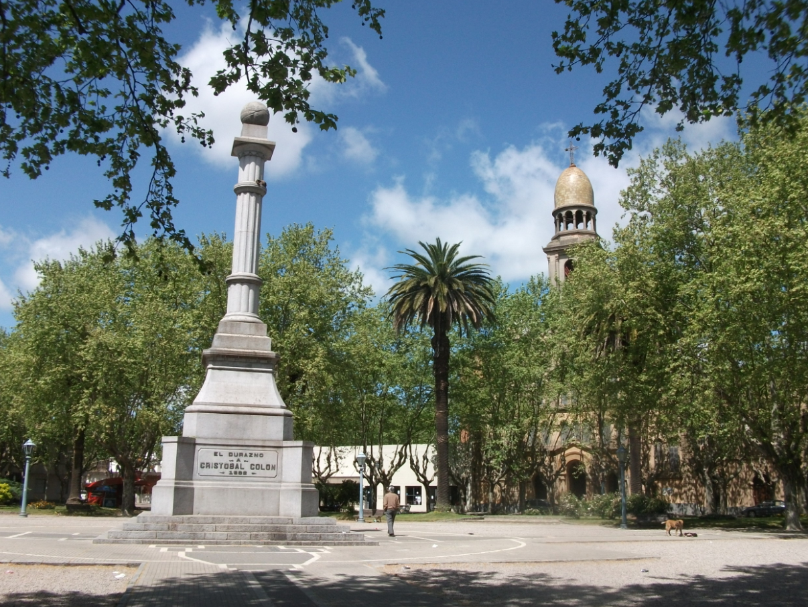
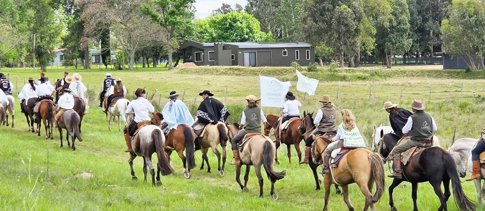
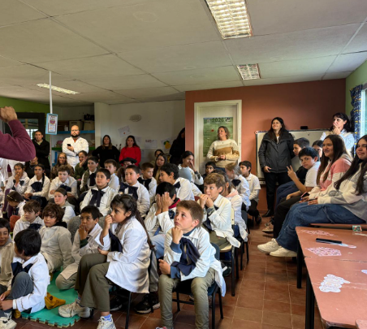
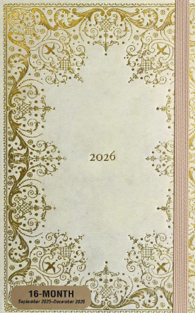
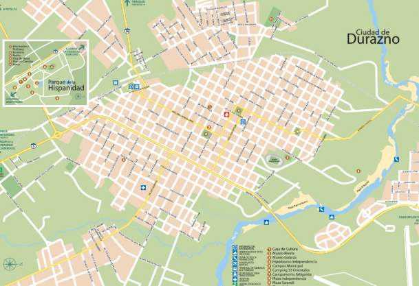
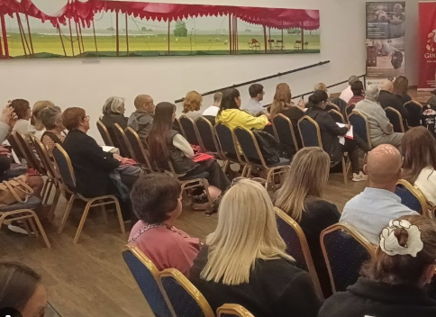
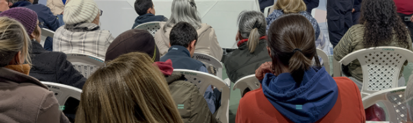

Actividad local
Participación sostenida en la vida pública departamental, con presencia territorial y cercanía con vecinos e instituciones.
Sitio institucional
Un espacio para conocer la trayectoria, la gestión parlamentaria, las propuestas y los temas que forman parte de la agenda pública de Durazno.
Representante Nacional por Durazno
Trayectoria pública, trabajo territorial y compromiso con el interior del país.Historia pública

Participación sostenida en la vida pública departamental, con presencia territorial y cercanía con vecinos e instituciones.
Experiencia en áreas de gobierno vinculadas a la administración, la coordinación institucional y el trabajo social.
Trabajo político orientado a representar los intereses de Durazno y del interior en espacios de decisión nacional.
Vínculo con medios, comunidad y espacios de diálogo público, fortaleciendo la comunicación con la ciudadanía.
Trabajo parlamentario
Esta sección permite reunir en un solo lugar la actividad legislativa, las intervenciones, los planteos públicos y los temas de trabajo vinculados a Durazno.
Territorio y comunidad

Acompañamiento a productores, trabajadores y sectores vinculados al desarrollo agropecuario.
Impulso a propuestas que fortalezcan el empleo, la formación y el desarrollo de nuevos proyectos.
Seguimiento de problemáticas habitacionales y búsqueda de soluciones para familias del departamento.
Espacio para visibilizar inquietudes de barrios, pueblos, zonas rurales y comunidades del departamento.
Actualidad

Espacio destinado a comunicar encuentros, recorridas, planteos recibidos y avances de gestión.
Leer másPublicación de intervenciones, proyectos y asuntos tratados desde el rol parlamentario.
Leer más
Novedades sobre temas relevantes para Durazno, sus localidades y su gente.
Leer másPresencia territorial



Participación ciudadana
Este formulario permite recibir ideas, inquietudes y problemáticas de vecinos, instituciones y organizaciones, sin exponer datos personales de contacto directo.